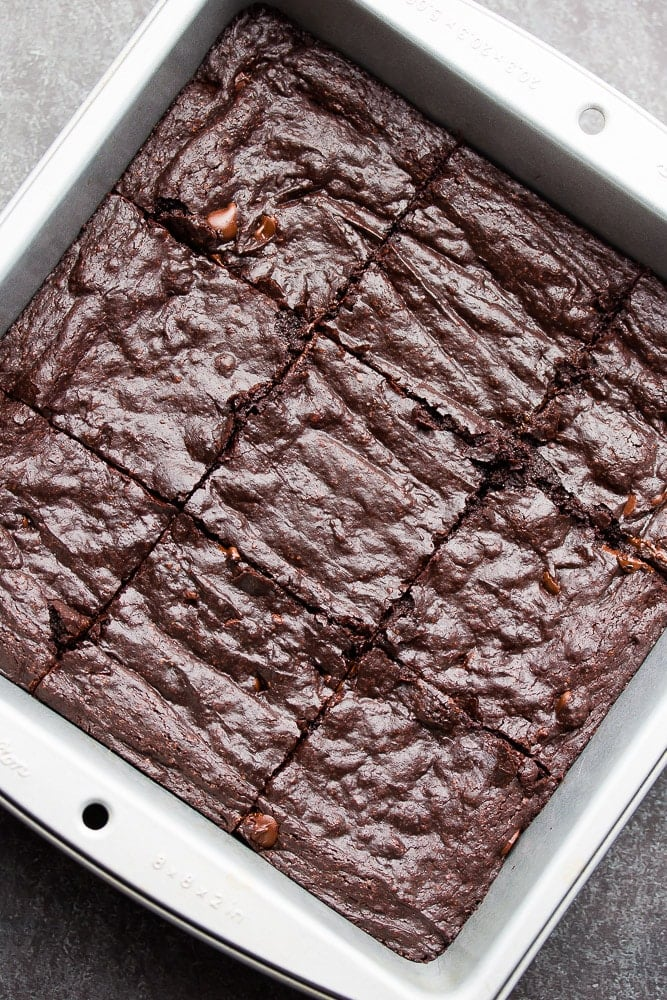

Vegan Brownies

Description
Coconut oil brownies are completely vegan, tall and fudgy with
the perfect crinkle top! Easy to make in 1 bowl. They do not
taste like coconut!
Ingredience
- 1/2 cup refined coconut oil
- 1/2 cup dairy free chocolate chips
- 1 cup granulated sugar
- 1/2 cup soy milk
- 2 teaspoons vanilla extract
- 3/4 cup all purpose flour
- 1/2 teaspoon salt
- 1/2 cup chocolate chips, optional to fold in
Steps
- Preheat the oven to 350 degrees F and lightly grease an 8x8
inch metal baking pan.
- In a large microwave safe bowl, add the coconut oil and 1/2
cup chocolate chips. Make sure to correctly measure your
coconut oil, do not accidentally add too much or too little
or the brownies may turn out greasy. Place the bowl in the
microwave and cook for about 2 minutes, stirring after 1
minute every 30 seconds until melted and smooth.
- Whisk in the sugar until it begins to dissolve in the warm
oil/chocolate. Now add the soy milk and vanilla and whisk
well to combine.
- Add the flour, cocoa and salt to the bowl and stir with a
spoon until just mixed, being careful not to over mix. Stir
in the extra chocolate chips, if desired (I always do).
- Pour into the prepared pan and bake for 30 minutes, until
the top is crinkly and the edges are pulling away from the
sides a bit. Let cool for a few minutes before enjoying.
They will cut better if they cool for at least 30 minutes,
but can be eaten sooner for a fudgier, melty experience!